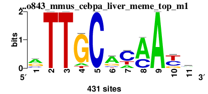
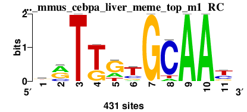

RSA-tools - matrix-quality result
Analysis: matrix-quality result: do560plusdo843_mmus_cebpa_liver_meme_top_m1 (06/09/2014 00:09)
matrix-quality result: Motif enrichment in CEBPa dog liver do560plusdo843_mmus_cebpa_liver_meme_top_m1
Command: matrix-quality -v 0 -html_title ' Motif enrichment in CEBPa dog liver ' -ms $RSAT/public_html/tmp/wwwrun/2014/09/05/matrix-quality_2014-09-05.235841_QFnNnl/input_matrix -matrix_format transfac -pseudo 1 -kfold 0 -seq sequence_set1 $RSAT/public_html/tmp/wwwrun/2014/09/05/matrix-quality_2014-09-05.235841_QFnNnl/sequence1.fasta -seq_format fasta -perm sequence_set1 2 -bgfile $RSAT/public_html/data/genomes/Canis_familiaris_EnsEMBL/oligo-frequencies/2nt_upstream-noorf_Canis_familiaris_EnsEMBL-ovlp-1str.freq.gz -bg_format oligo-analysis -bg_pseudo 0.01 -archive -o $RSAT/public_html/tmp/wwwrun/2014/09/05/matrix-quality_2014-09-05.235841_QFnNnl/matrix-quality_2014-09-05.235841
Figures
Matrix logo


Decreasing cumulative distributions (dCDF)

Decreasing cumulative distributions (dCDF), logarithmic Y axis

ROC curve (logarithmic X axis)

Matrix information
; convert-matrix -v 1 -from transfac -i $RSAT/public_html/tmp/wwwrun/2014/09/05/matrix-quality_2014-09-05.235841_QFnNnl/do560plusdo843_mmus_cebpa_liver_meme_top_m1/matrix-quality_2014-09-05.235841_do560plusdo843_mmus_cebpa_liver_meme_top_m1_matrix.tf -to tab -o $RSAT/public_html/tmp/wwwrun/2014/09/05/matrix-quality_2014-09-05.235841_QFnNnl/do560plusdo843_mmus_cebpa_liver_meme_top_m1/matrix-quality_2014-09-05.235841_do560plusdo843_mmus_cebpa_liver_meme_top_m1_matrix_info.txt -bgfile $RSAT/public_html/tmp/wwwrun/2014/09/05/matrix-quality_2014-09-05.235841_QFnNnl/matrix-quality_2014-09-05.2358412nt_upstream-noorf_Canis_familiaris_EnsEMBL-ovlp-1str.freq.gz_inclusive.tab -bg_format inclusive -return counts,frequencies,weights,info,parameters,sites,logo -logo_format png -logo_opt '-e -M -t do560plusdo843_mmus_cebpa_liver_meme_top_m1 ' -logo_file $RSAT/public_html/tmp/wwwrun/2014/09/05/matrix-quality_2014-09-05.235841_QFnNnl/do560plusdo843_mmus_cebpa_liver_meme_top_m1/matrix-quality_2014-09-05.235841_do560plusdo843_mmus_cebpa_liver_meme_top_m1_logo
; Input files
; input /home/rsat/rsat/public_html/tmp/wwwrun/2014/09/05/matrix-quality_2014-09-05.235841_QFnNnl/do560plusdo843_mmus_cebpa_liver_meme_top_m1/matrix-quality_2014-09-05.235841_do560plusdo843_mmus_cebpa_liver_meme_top_m1_matrix.tf
; prior /home/rsat/rsat/public_html/tmp/wwwrun/2014/09/05/matrix-quality_2014-09-05.235841_QFnNnl/matrix-quality_2014-09-05.2358412nt_upstream-noorf_Canis_familiaris_EnsEMBL-ovlp-1str.freq.gz_inclusive.tab
; Input format transfac
; Output files
; output /home/rsat/rsat/public_html/tmp/wwwrun/2014/09/05/matrix-quality_2014-09-05.235841_QFnNnl/do560plusdo843_mmus_cebpa_liver_meme_top_m1/matrix-quality_2014-09-05.235841_do560plusdo843_mmus_cebpa_liver_meme_top_m1_matrix_info.txt
; Output format tab
; pseudo-weight 1
; Background model
; Strand undef
; Background pseudo-frequency 0.01
; Residue probabilities
; a 0.26457
; c 0.23303
; g 0.23983
; t 0.26257
a 204 0 0 35 0 259 80 300 431 1 143
c 69 0 0 0 431 48 258 130 0 169 145
g 138 0 0 365 0 85 0 0 0 78 60
t 20 431 431 31 0 39 93 1 0 183 83
//
a 0.5 0.0 0.0 0.1 0.0 0.6 0.2 0.7 1.0 0.0 0.3
c 0.2 0.0 0.0 0.0 1.0 0.1 0.6 0.3 0.0 0.4 0.3
g 0.3 0.0 0.0 0.8 0.0 0.2 0.0 0.0 0.0 0.2 0.1
t 0.0 1.0 1.0 0.1 0.0 0.1 0.2 0.0 0.0 0.4 0.2
//
a 0.6 -6.1 -6.1 -1.2 -6.1 0.8 -0.4 1.0 1.3 -4.5 0.2
c -0.4 -6.1 -6.1 -6.1 1.5 -0.7 0.9 0.3 -6.1 0.5 0.4
g 0.3 -6.1 -6.1 1.3 -6.1 -0.2 -6.1 -6.1 -6.1 -0.3 -0.5
t -1.7 1.3 1.3 -1.3 -6.1 -1.1 -0.2 -4.5 -6.1 0.5 -0.3
//
a 0.3 -0.0 -0.0 -0.1 -0.0 0.5 -0.1 0.7 1.3 -0.0 0.1
c -0.1 -0.0 -0.0 -0.0 1.5 -0.1 0.6 0.1 -0.0 0.2 0.1
g 0.1 -0.0 -0.0 1.1 -0.0 -0.0 -0.0 -0.0 -0.0 -0.1 -0.1
t -0.1 1.3 1.3 -0.1 -0.0 -0.1 -0.0 -0.0 -0.0 0.2 -0.1
//
; Sites 431
>site_0
ATTGCACAACC
>site_1
ATTGCACAACC
>site_2
ATTGCACAATC
>site_3
ATTGCACAATC
>site_4
ATTGCACAACC
>site_5
ATTGCACAACC
>site_6
ATTGCACAACC
>site_7
ATTGCACAATC
>site_8
ATTGCACAACC
>site_9
ATTGCACAACC
>site_10
ATTGCACAATC
>site_11
ATTGCACAACA
>site_12
ATTGCACAATA
>site_13
ATTGCACAATA
>site_14
ATTGCACAATA
>site_15
ATTGCACAACA
>site_16
ATTGCACAATA
>site_17
ATTGCACAACA
>site_18
ATTGCACAACA
>site_19
ATTGCACAACA
>site_20
ATTGCACAATA
>site_21
ATTGCACAACA
>site_22
ATTGCACAACA
>site_23
ATTGCACAACA
>site_24
ATTGCACAACA
>site_25
ATTGCACAATA
>site_26
GTTGCACAATC
>site_27
GTTGCACAATC
>site_28
GTTGCACAACC
>site_29
GTTGCACAATC
>site_30
GTTGCACAATC
>site_31
GTTGCACAACC
>site_32
GTTGCACAATC
>site_33
GTTGCACAATC
>site_34
GTTGCACAATC
>site_35
GTTGCACAACC
>site_36
GTTGCACAATC
>site_37
GTTGCACAATC
>site_38
GTTGCACAATA
>site_39
GTTGCACAACA
>site_40
GTTGCACAATA
>site_41
GTTGCACAATA
>site_42
GTTGCACAATA
>site_43
GTTGCACAACA
>site_44
GTTGCACAACA
>site_45
GTTGCACAACA
>site_46
GTTGCACAACA
>site_47
GTTGCACAACA
>site_48
ATTGCACAATT
>site_49
ATTGCACAATT
>site_50
ATTGCACAATT
>site_51
ATTGCACAATT
>site_52
ATTGCACAACT
>site_53
ATTGCACAATT
>site_54
ATTGCACAACT
>site_55
ATTGCACAACT
>site_56
ATTGCACAATT
>site_57
ATTGCACAATT
>site_58
ATTGCACAATT
>site_59
ATTGCACAATT
>site_60
ATTGCACAATT
>site_61
ATTGCACAATT
>site_62
ATTGCACAATT
>site_63
ATTGCACAACT
>site_64
ATTGCACAAGC
>site_65
ATTGCACAAGC
>site_66
ATTGCACCATA
>site_67
GTTGCACAACT
>site_68
ATTGCACAATG
>site_69
GTTGCACAACT
>site_70
GTTGCACAATT
>site_71
GTTGCACAACT
>site_72
ATTGCACAATG
>site_73
GTTGCACAATT
>site_74
ATTGCACAAGA
>site_75
ATTGCACAAGA
>site_76
ATTGCACAAGA
>site_77
GTTGCACAACT
>site_78
ATTGCACAAGA
>site_79
ATTGCACAACG
>site_80
ATTGCACCACA
>site_81
ATTGCACAACG
>site_82
ATTGCACAATG
>site_83
ATTGCACAACG
>site_84
GTTGCACAATT
>site_85
ATTGCACAAGA
>site_86
GTTGCACAACT
>site_87
ATTGCACAAGA
>site_88
GTTGCACAATT
>site_89
ATTGCACAACG
>site_90
CTTGCACAACC
>site_91
GTTGCACAAGC
>site_92
CTTGCACAATC
>site_93
CTTGCACAACC
>site_94
ATTGCGCAATC
>site_95
CTTGCACAATC
>site_96
CTTGCACAATC
>site_97
ATTGCGCAATC
>site_98
CTTGCACAATC
>site_99
CTTGCACAATC
>site_100
ATTGCGCAATC
>site_101
CTTGCACAACC
>site_102
CTTGCACAACC
>site_103
CTTGCACAATA
>site_104
ATTGCGCAATA
>site_105
ATTGCGCAATA
>site_106
CTTGCACAACA
>site_107
GTTGCACAATG
>site_108
GTTGCACAATG
>site_109
GTTGCACAAGA
>site_110
CTTGCACAATA
>site_111
GTTGCACAACG
>site_112
ATTGCGCAACA
>site_113
GTTGCACAATG
>site_114
GTTGCACAATG
>site_115
ATTGCGCAATA
>site_116
GTTGCACAATG
>site_117
GTTGCACAATG
>site_118
GTTGCGCAACC
>site_119
GTTGCGCAATC
>site_120
GTTGCGCAACC
>site_121
ATTGCATAACA
>site_122
ATTGCATAACA
>site_123
GTTGCGCAATA
>site_124
GTTGCATAACC
>site_125
ATTGCAAAATC
>site_126
ATTGCAAAACC
>site_127
GTTGCATAATC
>site_128
ATTGCACAAGT
>site_129
ATTGCAAAACA
>site_130
ATTGCAAAATA
>site_131
GTTGCATAATA
>site_132
GTTGCAAAATC
>site_133
ATTGCACCATG
>site_134
ATTGCACAAGG
>site_135
GTTGCACAAGT
>site_136
ATTGCGCAATT
>site_137
ATTGCCCAATC
>site_138
ATTGCACAAGG
>site_139
GTTGCAAAACC
>site_140
ATTGCACAAGG
>site_141
GTTGCACAAGT
>site_142
ATTGCCCAATA
>site_143
ATTGCGCCATC
>site_144
ATTGCCCAACA
>site_145
ATTGCCCAACA
>site_146
ATTGCGCAAGC
>site_147
CTTGCACAAGC
>site_148
ATTGCGCAAGC
>site_149
CTTGCACAAGC
>site_150
GTTGCAAAACA
>site_151
CTTGCACAATG
>site_152
CTTGCACAATG
>site_153
ATTGCGCAAGA
>site_154
ATTGCATCATC
>site_155
CTTGCACAACG
>site_156
ATTGCATCATC
>site_157
ATTGCGCCACA
>site_158
ATTGCATCATC
>site_159
CTTGCACAATG
>site_160
GTTGCACAAGG
>site_161
ATTGCATCACC
>site_162
GTTGCACCAGA
>site_163
GTTGCACCAGA
>site_164
GTTGCACCAGA
>site_165
GTTGCACCATG
>site_166
ATTGCATCACA
>site_167
ATTGCATAAGA
>site_168
CTTGCGCAACC
>site_169
ATTGCAAAATT
>site_170
ATTGCATCATA
>site_171
ATTGCTCAACC
>site_172
ATTGCATCACA
>site_173
ATTGCATCACA
>site_174
GTTGCGCAAGC
>site_175
ATTGCATCACA
>site_176
ATTGCAAAATT
>site_177
GTTGCCCAACA
>site_178
GTTGCCCAACA
>site_179
ATTGCATAAGA
>site_180
ATTGCTCAATC
>site_181
ATTGCAACACC
>site_182
ATTGCGTAACC
>site_183
ATTGCAACATC
>site_184
CTTGCATAACC
>site_185
ATTGCAACACC
>site_186
ATTGCAACATC
>site_187
ATTGCTCAACA
>site_188
ATTGCAACATC
>site_189
GTTGCATCATC
>site_190
GTTGCGCCACA
>site_191
CTTGCGCAACA
>site_192
ATTGCAACACA
>site_193
GTTGCTCAATC
>site_194
GTTGCTCAATC
>site_195
GTTGCATCACA
>site_196
GTTGCTCAATC
>site_197
GTTGCTCAACC
>site_198
ATTGCAACACA
>site_199
GTTGCATCACA
>site_200
GTTGCTCAATC
>site_201
ATTGCAACACA
>site_202
GTTGCATCACA
>site_203
GTTGCATAATG
>site_204
GTTGCAAAACT
>site_205
TTTGCACAATC
>site_206
TTTGCACAATC
>site_207
TTTGCACAATC
>site_208
GTTGCAACACC
>site_209
GTTGCAACACC
>site_210
ATTGCGAAATA
>site_211
ATTACACAACC
>site_212
ATTACACAACC
>site_213
ATTACACAATC
>site_214
ATTACACAATC
>site_215
ATTACACAACC
>site_216
GTTGCAACACA
>site_217
ATTGCCCAATG
>site_218
ATTGCATCACT
>site_219
ATTGCCCCATA
>site_220
TTTGCACAATA
>site_221
ATTGCCCCACA
>site_222
GTTGCAACACA
>site_223
ATTGCCCAATG
>site_224
CTTGCAAAACA
>site_225
ATTGCCCAACG
>site_226
TTTGCACAATA
>site_227
GTTGCAACATA
>site_228
GTTGCGTAATA
>site_229
ATTTCACAACC
>site_230
ATTGCTCAATT
>site_231
ATTACACAACA
>site_232
GTTGCACCAGG
>site_233
GTTGCGAAACC
>site_234
ATTACACAACA
>site_235
CTTGCCCAACC
>site_236
ATTGCTCAACT
>site_237
ATTGCATCAGC
>site_238
ATTTCACAACC
>site_239
ATTTCACAACC
>site_240
ATTGCGTAACT
>site_241
ATTTCACAACA
>site_242
GTTGCCCAAGA
>site_243
ATTGCATCATG
>site_244
CTTGCGCAAGC
>site_245
ATTGCATCATG
>site_246
ATTGCAACACT
>site_247
GTTACACAACC
>site_248
ATTGCAACACT
>site_249
ATTGCGTAACT
>site_250
GTTGCCCCACA
>site_251
GTTGCCCAATG
>site_252
GTTGCCCAAGA
>site_253
GTTGCCCAATG
>site_254
CTTGCGCCATC
>site_255
GTTACACAATC
>site_256
ATTTCACAACA
>site_257
GTTGCCCAACG
>site_258
GTTGCGAAATA
>site_259
CTTGCATCATC
>site_260
GTTACACAATA
>site_261
CTTGCATCACC
>site_262
ATTGCGTAAGC
>site_263
ATTGCAACAGC
>site_264
GTTGCATCAGC
>site_265
CTTGCGCAAGA
>site_266
GTTTCACAATC
>site_267
GTTACACAACA
>site_268
ATTGCTCAAGA
>site_269
CTTGCATCACC
>site_270
ATTGCGTCATC
>site_271
CTTGCGCAACG
>site_272
GTTGCTCAACT
>site_273
CTTGCATCATC
>site_274
CTTGCGCCACA
>site_275
GTTGCAACACT
>site_276
TTTGCACAACT
>site_277
ATTGCAACAGA
>site_278
ATTGCAACAGA
>site_279
CTTGCATAATG
>site_280
TTTGCACAACT
>site_281
ATTGCGTCATA
>site_282
GTTGCATCAGA
>site_283
ATTGCGAAACT
>site_284
GTTGCAACATT
>site_285
GTTGCATCAGA
>site_286
ATTGCGTAAGA
>site_287
ATTGCAACACG
>site_288
ATTGCGAAAGC
>site_289
ATTGCGACACC
>site_290
CTTGCGTAACC
>site_291
CTTGCAACATC
>site_292
GTTGCTCAAGA
>site_293
ATTGCTTAACC
>site_294
CTTGCTCAATA
>site_295
ATTACACAACT
>site_296
ATTACACAACT
>site_297
CTTGCAACATC
>site_298
GTTGCCTAACA
>site_299
ATTGCGACACC
>site_300
CTTGCGTAACA
>site_301
GTTGCAACATG
>site_302
CTTGCAAAACG
>site_303
GTTGCAACATG
>site_304
ATTGCTTAATA
>site_305
ATTTCACAACT
>site_306
ATTGCGACATA
>site_307
ATTGCGAAATG
>site_308
ATTACACCACA
>site_309
ATTGCTCAAGT
>site_310
GTTGCGACATC
>site_311
GTTGCGACATC
>site_312
GTTGCTTAACC
>site_313
ATTGCTAAACC
>site_314
ATTGCTAAACC
>site_315
CTTGCGAAATC
>site_316
CTTGCCCCACC
>site_317
CTTGCCCCATC
>site_318
GTTACACAACT
>site_319
CTTGCCCAAGA
>site_320
ATTGCCTCACC
>site_321
ATTGCCTCATC
>site_322
ATTTCACAATG
>site_323
ATTGCATCAGG
>site_324
ATTTCACAATG
>site_325
ATTGCCTCATC
>site_326
ATTACGCAACC
>site_327
CTTGCATCATT
>site_328
TTTGCGCAATA
>site_329
CTTGCGAAATA
>site_330
GTTGCTTAATA
>site_331
GTTTCACAATT
>site_332
ATTGCCAAATT
>site_333
CTTACACAATA
>site_334
CTTACACAATA
>site_335
CTTGCTCAACT
>site_336
CTTACACAATA
>site_337
ATTGCGTCACG
>site_338
CTTGCATCAGA
>site_339
ATTGCGTAAGG
>site_340
ATTGCCACATC
>site_341
GTTGCCTCACC
>site_342
GTTGCGTAAGT
>site_343
GTTTCACAAGA
>site_344
GTTTCACAAGA
>site_345
GTTGCAACAGT
>site_346
GTTTCACAATG
>site_347
CTTGCTCAAGA
>site_348
ATTGCCACACA
>site_349
ATTGCCAAATG
>site_350
ATTGCGACAGC
>site_351
ATTGCTTCACC
>site_352
ATTGCCACATA
>site_353
GTTGCGTAAGG
>site_354
CTTGCAACATG
>site_355
ATTGCTTCACA
>site_356
TTTGCGCAATT
>site_357
CTTACACAATT
>site_358
TTTGCGCAAGC
>site_359
GTTGCGACAGC
>site_360
GTTGCTTCATC
>site_361
ATTTCAAAACA
>site_362
GTTGCTTCATC
>site_363
CTTGCGACACC
>site_364
GTTACACAAGT
>site_365
CTTGCTTAATC
>site_366
ATTGCCTAAGT
>site_367
GTTGCGACAGA
>site_368
TTTGCGCAAGA
>site_369
ATTACCCAACA
>site_370
CTTGCGAAATG
>site_371
GTTGCGACAGA
>site_372
TTTGCGCAAGA
>site_373
TTTGCGCAAGA
>site_374
TTTGCATCATC
>site_375
TTTGCGCAATG
>site_376
GTTGCGACATG
>site_377
TTTGCGCAAGA
>site_378
ATTGCCTCACG
>site_379
GTTTCAAAACA
>site_380
GTTGCCTCATT
>site_381
GTTGCCTCACT
>site_382
CTTGCGTAAGT
>site_383
CTTGCCTCATC
>site_384
CTTGCGTAAGT
>site_385
TTTGCGTAATC
>site_386
CTTGCCTCATC
>site_387
CTTGCGTCACT
>site_388
ATTGCGTCAGG
>site_389
GTTACATAACT
>site_390
GTTGCCACACT
>site_391
GTTTCATAATT
>site_392
ATTACAACACC
>site_393
GTTTCCCAACA
>site_394
ATTACCCAATT
>site_395
ATTGCTTCATG
>site_396
CTTGCGACACT
>site_397
GTTACATCATA
>site_398
ATTGCTTCATG
>site_399
CTTGCGTAAGG
>site_400
CTTGCCACACA
>site_401
TTTGCGAAACA
>site_402
ATTACCCAATG
>site_403
GTTGCTACATT
>site_404
CTTGCTTCATA
>site_405
CTTGCGACAGA
>site_406
GTTACCCAAGC
>site_407
ATTACTCAATT
>site_408
ATTTCTCAACT
>site_409
ATTTCAACACT
>site_410
ATTGCACAAAC
>site_411
ATTTCCTAACA
>site_412
GTTACAACATT
>site_413
ATTACCCAAGT
>site_414
ATTACGACATC
>site_415
TTTACACAAGA
>site_416
ATTTCCCCAGC
>site_417
ATTACTTAATA
>site_418
GTTTCGTCACC
>site_419
GTTTCGTCACA
>site_420
CTTTCACCAGG
>site_421
TTTGCGACACT
>site_422
GTTGCACTATC
>site_423
ATTTCGTCATT
>site_424
ATTTCGTCATT
>site_425
CTTTCTCAATT
>site_426
ATTTCGACATT
>site_427
ATTTCTTCACC
>site_428
CTTTCCCAAGT
>site_429
GTTTCTTCACC
>site_430
GTTACTTCACT
;
; Matrix parameters
; Columns 11
; Rows 4
; Alphabet a|c|g|t
; Prior a:0.264573486852274|c:0.233031168150323|g:0.239829744535815|t:0.262565600461588
; program transfac
; matrix.nb 1
; accession do560+do843_mmus_cebpa_liver_meme_top_m1
; AC do560+do843_mmus_cebpa_liver_meme_top_m1
; id do560+do843_mmus_cebpa_liver_meme_top_m1
; name do560plusdo843_mmus_cebpa_liver_meme_top_m1
; description rTTGCacmAym
; statistical_basis 431 sequences
; sites 431
; min.prior 0.233031
; alphabet.size 4
; max.bits 2
; total.information 8.36598
; information.per.column 0.760543
; max.possible.info.per.col 1.45658
; consensus.strict aTTGCacaAcc
; consensus.strict.rc GGTTGTGCAAT
; consensus.IUPAC rTTGCacmAym
; consensus.IUPAC.rc KRTKGTGCAAY
; consensus.regexp [ag]TTGCac[ac]A[ct][ac]
; consensus.regexp.rc [GT][AG]T[GT]GTGCAA[CT]
; residues.content.crude.freq a:0.3065|c:0.2637|g:0.1531|t:0.2767
; G+C.content.crude.freq 0.41679
; residues.content.corrected.freq a:0.3064|c:0.2636|g:0.1533|t:0.2767
; G+C.content.corrected.freq 0.41692
; min(P(S|M)) 2.52084e-29
; max(P(S|M)) 0.0141185
; proba_range 0.0141185
; Wmin -50.4
; Wmax 11
; Wrange 61.4
; logo file:/home/rsat/rsat/public_html/tmp/wwwrun/2014/09/05/matrix-quality_2014-09-05.235841_QFnNnl/do560plusdo843_mmus_cebpa_liver_meme_top_m1//matrix-quality_2014-09-05.235841_do560plusdo843_mmus_cebpa_liver_meme_top_m1_logo_m1.png
; logo file:/home/rsat/rsat/public_html/tmp/wwwrun/2014/09/05/matrix-quality_2014-09-05.235841_QFnNnl/do560plusdo843_mmus_cebpa_liver_meme_top_m1//matrix-quality_2014-09-05.235841_do560plusdo843_mmus_cebpa_liver_meme_top_m1_logo_m1_rc.png
; Host name rsat
; Job started 2014-09-06.000348
; Job done 2014-09-06.000348
; Seconds 0.34
; user 0.34
; system 0.01
; cuser 0.31
; csystem 0.01
Result files
{kind=link}
{kind=link}